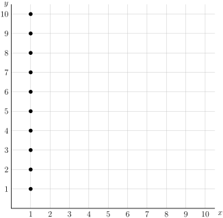
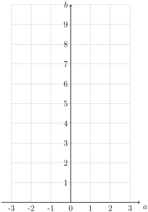

Section 1.3 Relations and Functions
Now that we have sets, we introduce a new object that connects one set to another. We call this object a relation. We'll also see that if a relation has some particularly “nice” properties, we'll call it a function.
Subsection Relations
Definition 1.3.1. Relations.
A mathematical relation, \(\mathrel{R}\text{,}\) between two sets \(A\) and \(B\) is a collection of ordered pairs from the two sets. Expressed symbolically, \(\mathrel{R} \subseteq A \times B\text{.}\) This is sometimes called a binary relation because it relates two sets.
We call set \(A\) the domain and the set \(B\) the codomain.
If \(a\) is related to \(b\) we will write \(a \mathrel{R} b\) or \((a,b) \in \mathrel{R}\text{.}\) If two elements \(c \) and \(d\) are not related, we write \(c \cancel{\mathrel{R}} d\text{.}\)
Because a (binary) relation is a collection of ordered pairs from two sets, a relation is actually just a set itself, but that set carries particular meaning about its individual components.
Example 1.3.2.
If we consider \(A\) and \(B\) to both be the set of people in your family, and let \(\mathrel{R}\) be the relation “\(a\) is a sibling of \(b\text{.}\)” Here's an example of my family in two graphical representations. What are the ordered pairs that make up the relation?
Looking that the points on the graph, we see that the relation will be the set of ordered pairs:
Notice that these ordered pairs correspond to the lines on the graph diagram with each of the first coordinates being connected to the second coordinate. E.g. an arrow goes from John to Eric.
Example 1.3.3. The Divides Relation.
Let \(A\) and \(B\) both be the set of integers from 1 to 10, and define the relation by \(a \mathrel{R} b\) means that \(a\) evenly divides into \(b\) with no remainder.
Here are some examples of the divides relation:
\(2 \mathrel{R} 4\) since 2 divides into 4 evenly. There is no remainder.
Similarly, \(5 \mathrel{R} 5\) since it divides into itself. No remainder.
\(3 \cancel{\mathrel{R}} 4\) since 3 doesn't divide into 4. The remainder is 1.
\(6 \cancel{\mathrel{R}} 3\) since 6 doesn't divide into 3. The remainder is 3.
Now, complete the following questions:
Complete the following graph of the relation below, where a point on \((x,y)\) means that \(x \) divides evenly into \(y\text{.}\)
Now list all ordered pairs in the relation.
The complete listing of the relation is:
and a video for the graph:
Example 1.3.4.
The domain and codomain don't have to be the same. For example, let \(\mathrel{R}\) be the relation from the set of people in discrete math class to the natural numbers which maps a person to their height in inches. In this example, (John, 76) \(\in \mathrel{R}\text{.}\) What ordered pair represents you?
Example 1.3.5.
Let \(\mathrel{R}\) be the relation from \(\Z\) to \(\Z\) where we say \(a \mathrel{R} b\) if \(a^2 = b\text{.}\)
List the first few ordered pairs of the relation for \(a = 0, 1, 2, \dots 5\text{.}\)
Plot points for the graph of \(\mathrel{R}\) for \(a =-3, -2, -1, 0, 1, 2, 3\text{.}\)

Definition 1.3.6. Inverse of Relations.
Let \(R\) be a relation between sets \(A \and B\text{.}\) The inverse relation of \(R\) is the relation that assigns to each element \(b\in B\) an element \(a \in A\text{.}\) We denote the inverse by \(R^{-1}\text{,}\) so that
for \(a \in A \and b \in B\text{.}\)
Example 1.3.7.
For the purposes of this exercise, all numbers come from \(\R\) and \(R_4\) and \(R_5\) are subsets of the set of people.
The relation \(R = \{(x, y) \mid y = 2x + 1\}\) has the inverse \(R^{-1} = \{(x, y) \mid y = (x-1)/2\}\text{.}\) Use this form to give inverses of the following relations:
\(\displaystyle R_1 = \{ (x,y) \mid y = -3x + 2\}\)
\(\displaystyle R_2= \{ (x,y) \mid y = x^2 + 2\}\)
\(\displaystyle R_3 = \{(x,y) \mid y \gt 3x - 4\}\)
\(\displaystyle R_4 = \{(x,y) \mid y \text{ is the parent of } x \}\)
\(\displaystyle R_5 = \{(x,y) \mid x \text{ is a sibling of } y \}\)
Subsection Functions
Definition 1.3.8. Functions.
A function from the set \(A\) to the set \(B\) is a relation with the property that exactly one element from \(B\) is mapped to each element of the set \(A\text{.}\)
We denote this relation by \(f:A\to B\)
If \(b\in B\) is the unique element assigned to \(a\in A\text{,}\) we write \(f(a)=b\)
If \(f(a) = b\text{,}\) we call
\(b\) is the image of \(a\) under the mapping
\(a\) is the preimage of \(b\) under the mapping
and we define the range of the function \(f\) to be the set of images of every element in the domain, \(A\text{,}\) and often write the range by \(f(A)\text{.}\) Note that the range is a subset of the codomain, \(f(A)\subseteq B\text{.}\)
Video / Answer.Note 1.3.9.
A function has two pieces of information:
Specification of two sets, the domain and codomain
A mapping between those two sets
In this class, we will be using a variety of ways of describing the domain and codomain of a function, from writing \(f:A \to B\) to describing them in words.
Example 1.3.10.
Find the domain, codomain, and range of the following functions:
Let \(f: \mathbb{Z} \to \mathbb{Z}\) be defined by \(f(x)=x^2\)
Let \(g: \mathbb{R} \to \mathbb{R}\) be defined by \(g(x)=x^2\)
Definition 1.3.11. Injective Functions.
A function \(f\) is said to be injective or one-to-one if and only if \(f(a) = f(b)\) means that \(a = b\) for all \(a \text{ and } b\) in the domain of \(f\text{.}\)
To determine if a function \(f: A \to B\) is injective, we show that if \(f(x) = f(y)\) for arbitrary values \(x, y \in A\) with \(x \not= y\text{,}\) we conclude \(x=y\text{.}\) (In a future section, we'll call this a direct proof).
To determine if a function \(f: A \to B\) is not injective, we find particular elements \(x, y \in A\) such that \(x \not= y\) but \(f(x) = f(y)\) (we'll call this finding a “counterexample”.)
Example 1.3.12.
Draw a graph of a function which is not injective. Draw also the graph of one that is.
The following is a (silent) animation showing the graph of two functions, both have the algebraic expression \(f(x)=x^2\text{.}\) The first maps \(f: \R \to \R\text{,}\) which is not injective since, for example, \(f(-2)=f(2)\text{,}\) but \(-2\ne 2\text{,}\) while the second maps \(f:[0, \infty)\to \R\text{,}\) and it is injective.
Example 1.3.13.
Determine if the following functions are injective. If so, prove it. If not, provide a specific counterexample showing that it is not.
Let \(f:\mathbb{R} \to \mathbb{R}\) be defined by \(f(x) = 2x-1\text{.}\)
Let \(g(x) = x^2\) be the mapping from \(\mathbb{R} \to \mathbb{R}\text{.}\)
Definition 1.3.14. Surjective Functions.
A function \(f\) from \(A\) to \(B\) is said to be surjective or onto if and only if for every element \(b \in B\text{,}\) there is an element \(a \in A\) such that \(f(a) = b\text{.}\)
Video / Answer.If a function is surjective the range is exactly the codomain, that is \(f(A) = B\)
To determine if a function \(f: A \to B\) is surjective, we show that given an arbitrary element \(y \in B\) we can find an element \(x\in A\) such that \(f(x)=y\text{.}\) (A direct proof).
To determine if a function \(f: A \to B\) is not surjective, we find a particular element \(y \in B\) such that \(f(x) \not= y\) for all \(x\in A\) (a counterexample!)
Example 1.3.15.
Draw a graph of a function which is not surjective. Draw also the graph of one that is.
The following is an animation showing the graph of two functions, both have the algebraic expression \(f(x)=x^2\text{.}\) The first maps \(f: \R \to \R\text{,}\) which is not surjective since, for example, \(-1\) is in the codomain, but \(f(x)=-1\) has no solution in the domain.
The second maps \(f:\R \to [0, \infty)\text{,}\) and it is surjective since each and every element of the codomain is mapped to.
Example 1.3.16.
Determine if the following functions are surjective. If so, prove it. If not, provide a specific counterexample showing that it is not.
Let \(f:\mathbb{R} \to \mathbb{R}\) be defined by \(f(x) = 2x-1\text{.}\)
Let \(g(x) = x^2\) be the mapping from \(\mathbb{R} \to \mathbb{R}\text{.}\)
Let \(g(x) = x^2\) be the mapping from \(\mathbb{Z} \to \mathbb{Z}\text{.}\)
Let \(g(x) = x^3\) be the mapping from \(\mathbb{Z} \to \mathbb{Z}\text{.}\)
Two videos in this section:
Definition 1.3.17. Bijective Functions.
A function \(f\) from \(A\) to \(B\) is said to be a one-to-one correspondence or bijective if it is both injective and surjective.
Example 1.3.18.
Determine if the following are bijections from \(\mathbb{R} \to \mathbb{R}\text{:}\)
\(\displaystyle f(x) = -3x^2 + 7\)
\(\displaystyle f(x) = x^5 + 1\)
\(\displaystyle f(x) = 5^x\)
\(\displaystyle \ds f(x) = \frac{x+1}{x+2}\)
Which of the functions we've considered so far have been bijections?
Definition 1.3.19. The Modulus Operation.
Define the modulus operation, \(a \modulus m\text{,}\) on the set of integers to return the remainder when dividing \(a\) by \(m\text{.}\)
For example,
\(25 \modulus 4 = 1\) since the remainder when dividing 25 by 4 is 1.
\(25 \modulus 5 = 0\) since 5 divides evenly into 25.
\(\displaystyle 14 \modulus 5 = 4\)
\(-1 \modulus 5 = 4\) (remainders are always positive)
We'll use this operation to explore injective and surjective properties of functions! But first, so that we don't have to write \(\{0, 1, 2, 3, 4, 5\}\) or say “all possible remainders when dividing by six,” we introduce notation that says it for us.
Definition 1.3.20. Set of Integers Modulo n.
We define the set \(\mathbb{Z}_n\text{,}\) pronounced “integers mod n” to be the set of all possible remainders when dividing by \(n\text{:}\)
For example:
\(\displaystyle \mathbb{Z}_5 = \{0, 1, 2, 3, 4\} \)
\(\displaystyle \mathbb{Z}_7 = \{0, 1, 2, 3, 4, 5, 6\}\)
\(\displaystyle \mathbb{Z}_{10} = \{0, 1, 2, 3, 4, 5, 6, 7, 8, 9\}\)
Example 1.3.21.
Complete the following tables of values for each function:
-
Let \(f:\Z_5 \to \Z_5\) be defined by \(f(n) = (n + 2)\modulus 5\)
\(x\) 0 1 2 3 4 \(f(x)\) Is \(f\) injective? surjective?
-
Let \(g:\Z_6 \to \Z_6\) be defined by \(g(n) = (n^2 + 2) \modulus 6\)
\(x\) 0 1 2 3 4 5 \(g(x)\) Is \(g\) injective? surjective?
-
\(x\) 0 1 2 3 4 \(f(x)\) 2 3 4 0 1 \(f\) is both injective and surjective - each output occurs only one time (injective) and each output occurs (surjective).
Note that the range of the function \(f\) is \(\{0, 1, 2, 3, 4\}\) which is equal to the whole co-domain (surjective).
-
\(x\) 0 1 2 3 4 5 \(g(x)\) 2 3 0 5 0 3 \(g\) is not injective since \(g(1) = g(5)\text{.}\) The same output occurs twice - it fails the "horizontal line test." \(g\) is also not surjective since there is no solution to \(1 = g(n)\) in the domain. The number 1 is in the codomain, but it's never output.
Note that the range of the function \(g\) is \(\{0, 2, 3, 5\}\) which is not equal to the whole co-domain (not surjective).
Definition 1.3.22. Inverse Functions.
Let \(f:A \to B\) be a bijection. The inverse function of \(f\) is the unique function that assigns to each element \(b\in B\) a unique element \(a \in A\) such that \(f(a) = b\text{.}\) We denote the inverse by \(f^{-1}\) so that
Note 1.3.23.
Relations always have an inverse! We simply interchange the domain and codomain sets.
As we've seen, the inverse of a relation is always a relation, but not always a function. In order for a function, \(f\) to have an inverse function, \(f\) must be bijective.
-
If the function is not injective, then the inverse relation isn't a function. Failing the “horizontal line test” for injectivity means failing the “vertical line test” for being a function.
Here's an animation that illustrates this idea:
-
If the function is not surjective, then the inverse relation isn't well-defined. Any values that aren't mapped to in the original codomain can't be plugged into the inverse.
Here's an animation that illustrates this idea:
Example 1.3.24.
For the bijection(s) found in Example 1.3.18, find the inverse function.
Example 1.3.25.
Restrict the domain and/or codomain (that is, make the domain/codomain smaller sets) so that \(f(x) = x^2 + 1\) is invertible. Verify your answer is correct.
In order for \(f\) to be injective, we can restrict the domain to just the non-negative real numbers: \([0, \infty)\text{.}\) In order for \(f\) to be surjective, using the codomain to be the interval \([1, \infty)\) works for the chosen domain.
Alternatively, if we choose the domain to be \(\N\text{,}\) then the range is only square numbers, so the codomain would need to be \(\{1, 4, 9, 16, \dots\}\text{.}\)
Definition 1.3.26. Function Composition.
Let \(g:A \to B\) and let \(f:B \to C\text{.}\) The composition of \(f\) and \(g\), denoted by \(f\circ g : A \to C\) is defined, for all \(a \in A\text{,}\) by \((f \circ g)(a) = f(g(a))\text{.}\)
Example 1.3.27.
Let \(f(x) = 5x-3\) and \(g(x) = 3x^2-5\text{.}\) Find \(f\circ g\) and \(g\circ f\)
This is basic algebra. \((f \circ g)(x) = 15x^2 - 28 \and (g \circ f)(x) = 75x^2 - 90x + 22\)
Example 1.3.28.
Suppose \(f\) and \(f\circ g\) are injective. Does it follow that \(g\) is also injective?
Note 1.3.29.
Since given a function \(f: A \to B\) we define \(f^{-1}: B \to A\) by \(f(a) = b \iff f^{-1}(b) = a\) for \(a \in A\text{,}\) \(b \in B\text{,}\) we have:
-
for \(b \in B\text{,}\) we have
\begin{equation*} (f \circ f^{-1})(b) = f(f^{-1}(b)) = f(a) = b \in B \end{equation*} -
and for \(a \in A\text{,}\) we have
\begin{equation*} (f^{-1} \circ f)(a) = f^{-1}(f(a)) = f^{-1}(b) = a \in A \end{equation*}
That is, the inverse “undoes” a function.
Subsection Computer Corner
C++ defines functions by specifying both the input parameters (domain) and return type (co-domain). Here are some function examples:
int square(int num) {
return num*num;
}
Here the function is \(\text{square}: \Z \to \Z\text{.}\)
Here's another sample that changes the definition of the standard square root function:
#include <math.h>
int mySqrt(int num) {
return sqrt(num)
}
// this will return things like
// mySqrt(4) = 2, which you'd expect.
// but...
// mySqrt(5) = 2, also.
// This means mySqrt is not injective.
This function is \(\text{mySqrt}: \Z \to \Z\text{.}\) We can input negative numbers, but sqrt() throws an error in that case.
To get the correct fractional value of the square root of an integer, though, we'd need this:
#include <math.h>
double mySqrt(int num) {
return sqrt(num)
}
// Hooray!
// mySqrt(5) = 2.23607
// and this time mySqrt is injective
This time the function is \(\text{mySqrt}: \Z \to \Q\text{.}\) The specification of the codomain is essential to make sure we can compute the correct value!
Subsection What kind of object? Binary operations vs. \(a\mathrel{R} b\)
I want to contrast the idea of a binary operation, such as \(+, -, \cdot, \div, \modulus\) with the mathematical statement \(a \mathrel{b}\text{.}\)
A binary operation takes two numbers and returns a third number. Its result is a number.
As noted previously, \(a \mathrel{R} b\) is a statement when \(\mathrel{R}\) is a relation between two sets; it returns a truth value.
Example 1.3.30.
What kind of object are each of the following? What is the value, truth or numeric?
\(\displaystyle 2 \cdot 7 \)
\(\displaystyle 3 \gt 8 \)
\(\displaystyle 42 \div 3 \)
\(\displaystyle 9 \text{ divides } 81 \)
\(\displaystyle 1 + 2 = 3\)
This is a number, the number is 14.
This is a statement, the value is false.
This is a number, it is 14
This is a statement, it is true, since 9 divides into 81 evenly
This is a statement, it is true. We're relating the operation 1+2 with the number 3
Just remember, you wouldn't say “\(1 + 2\) is false”, and you wouldn't say “\(3\lt 4\) is 12”. Practice thinking about what type of object is expected, and it will become second nature.
The relation is the final of our mathematical building blocks. From here on we will be combining logical propositions, sets, and relations to build greater and greater complexity throughout the semester.
Exercises Exercises
1.
Consider the relation
Is \(R\) a function?
Find \(R^{-1}\text{.}\)
Is \(R^{-1}\) a function? Why or why not?
Yes
\(\displaystyle R^{-1} = \{(x, y) \mid y^2 = x, \text{ for } y = -3, -2, -1, \dots 2, 3\} \)
No
2.
Is the sibling relation defined in Example 1.3.2 a function? Why or why not?
Is the divides relation defined in Example 1.3.3 on the set \(\{1, 2, 3, \dots, 10\}\) to itself a function? Why or why not?
Is the height relation between the set of people and the set of natural numbers a function? Why or why not?
No.
No. For example \((2, 2)\) and \((2,4)\) are the the relation.
Yes, each person has a unique height (at any given time).
3.
Let \(\mathrel{R}\) be the relation between the set \(A\) and itself defined by \(a \mathrel{R} b\) whenever \(a \and b\) are exactly the same object.
What is the familiar way we normally write this relation?
Is this relation a function? If so, what is the algebraic definition?
We'd normally write \(a=b\) if \(a \mathrel{R} b\) when \(a\) and \(b\) are the same object.
Yes! Given a set \(A\text{,}\) we define the function by \(f: A \to A\) by \(f(x)=x\text{.}\)
4.
Reformulate Definition 1.3.26 in order to define composition of two relations.
Very little needs changed - I'm simply relabling the variables. We'll explore relations (and their composition) in greater depth in Discrete 2.
Let \(G:A \to B\) and let \(R:B \to C\text{.}\) The composition of \(R\) and \(S\), denoted by \(R\circ S\) is defined, for all \(a \in A\text{,}\) by \((R \circ S)(a) = R(S(a))\text{.}\)
5.
Using the relations defined in Example 1.3.7, find the following compositions:
\(\displaystyle R_1 \circ R_2\)
\(\displaystyle R_2 \circ R_1\)
\(\displaystyle R_4 \circ R_4\)
\(\displaystyle R_5 \circ R_4\)
\(\displaystyle R_4 \circ R_5\)
\(\displaystyle R_1 \circ R_2 = \{(x,y) \mid y = -3(x^2 + 2) + 2\} = \{(x,y) \mid y = -3x^2 -4\}\)
\(\displaystyle R_2 \circ R_1 = \{(x,y) \mid y = (-3x+2)^2 + 2\} = \{(x,y) \mid 9x^2 -6x + 6\}\)
\(\displaystyle R_4 \circ R_4 = \{(x,y) \mid y \text{ is a grandparent of } x \}\)
\(\displaystyle R_5 \circ R_4 = \{(x,y) \mid y \text{ is a sibling of a parent of } x\} = \{(x,y) \mid y \text{ is an aunt/uncle of } x \}\)
\(\displaystyle R_4 \circ R_5 = \{ (x,y) \mid y \text{ is the parent of the sibling of } x\} = R_4\)
6.
Consider the function \(f:\{1,2,3,4,5\} \to \{1,2,3,4\}\) given by the table below:
| \(x\) | 1 | 2 | 3 | 4 | 5 |
| \(f(x)\) | 3 | 2 | 4 | 1 | 2 |
Is \(f\) injective? Explain.
Is \(f\) surjective? Explain.
Is \(f^{-1}\) a function? Explain.
No, the function is no injective. \(2 = f(2) = f(5) = 2\) but clearly \(2 \not= 5\)
Yes, the function is surjective. The codomain is \(\{1, 2, 3, 4\}\) and each element of the codomain is mapped (the range equals the codomain)
7.
Consider the function \(f:\{1,2,3,4\} \to \{1,2,3,4\}\) given by the graph below.
Is \(f\) injective? Explain.
Is \(f\) surjective? Explain.
No! \(f(1) = f(4)\) and \(1\ne 4\)
Also no, since there is no \(x\) for which \(f(x) = 2\text{.}\)
8.
For each function given below, determine whether or not the function is injective and whether or not the function is surjective.
\(f:\N \to \N\) given by \(f(n) = n+4\text{.}\)
\(f:\Z \to \Z\) given by \(f(n) = n+4\text{.}\)
\(f:\Z \to \Z\) given by \(f(n) = 5n - 8\text{.}\)
\(f:\Z \to \Z\) given by \(f(n) = \begin{cases}n/2 \amp \text{ if } n \text{ is even} \\ (n+1)/2 \amp \text{ if } n \text{ is odd} . \end{cases}\)
\(f\) is injective, but not surjective (since 0, for example, is never an output).
\(f\) is injective and surjective. Unlike in the previous question, every integers is an output (of the integer 4 less than it).
\(f\) is injective, but not surjective (10 is not 8 less than a multiple of 5, for example).
\(f\) is not injective, but is surjective. Every integer is an output (of twice itself, for example) but some integers are outputs of more than one input: \(f(5) = 3 = f(6)\text{.}\)
9.
Determine whether \(f:\Z \times \Z \to \Z\) is surjective if
\(\displaystyle f(m,n) = m + n\)
\(\displaystyle f(m,n) = m^2 + n^2 \)
\(\displaystyle f(m,n) = m\)
\(\displaystyle f(m,n) = m - n\)
Yes, since given any integer \(c\in \Z\) we can find two other integers \(m, n\) for which \(f(m,n) = c\) for example, \(f(c,0) = c+0 = c\text{.}\)
No, since \(-1 \in \Z\) and there is no integers \(m, n\) for which \(m^2 + n^2 = -1\text{.}\)
Yes, since every integer \(m\) in the codomain is mappsed to via \(f(m,0) = m\)
Yes again, this will map to every possible integer. For example, \(f(m,0) = m\) for any integer \(m\) in the codomain.
It's worth noting while these aren't injective, they can be surjective.
10.
Consider the function \(f:\Z \to \Z\) given by \(f(n) = \begin{cases}n+1 \amp \text{ if }n\text{ is even} \\ n-3 \amp \text{ if }n\text{ is odd} . \end{cases}\)
Is \(f\) injective? Prove your answer.
Is \(f\) surjective? Prove your answer.
-
\(f\) is injective.
Proof.
Let \(x\) and \(y\) be elements of the domain \(\Z\text{.}\) Assume \(f(x) = f(y)\text{.}\) If \(x\) and \(y\) are both even, then \(f(x) = x+1\) and \(f(y) = y+1\text{.}\) Since \(f(x) = f(y)\text{,}\) we have \(x + 1 = y + 1\) which implies that \(x = y\text{.}\) Similarly, if \(x\) and \(y\) are both odd, then \(x - 3 = y-3\) so again \(x = y\text{.}\) The only other possibility is that \(x\) is even an \(y\) is odd (or visa-versa). But then \(x + 1\) would be odd and \(y - 3\) would be even, so it cannot be that \(f(x) = f(y)\text{.}\) Therefore if \(f(x) = f(y)\) we then have \(x = y\text{,}\) which proves that \(f\) is injective.
-
\(f\) is surjective.
Proof.
Let \(y\) be an element of the codomain \(\Z\text{.}\) We will show there is an element \(n\) of the domain (\(\Z\)) such that \(f(n) = y\text{.}\) There are two cases: First, if \(y\) is even, then let \(n = y+3\text{.}\) Since \(y\) is even, \(n\) is odd, so \(f(n) = n-3 = y+3-3 = y\) as desired. Second, if \(y\) is odd, then let \(n = y-1\text{.}\) Since \(y\) is odd, \(n\) is even, so \(f(n) = n+1 = y-1+1 = y\) as needed. Therefore \(f\) is surjective.
11.
Give an explicit formula for a function from the set of integers to the set of positive integers that is
injective but not surjective
surjective but not injective
injective and surjective
neither injective nor surjective
Most likely, your solution will be piecewise-defined.
\(\displaystyle f(n) = \begin{cases} -2n \amp \text{ if } n\lt0 \\ 2n+3 \amp \text{ if } n\ge0\end{cases}\)
\(\displaystyle f(n) = \begin{cases} -n \amp \text{ if } n\lt0 \\ n+1 \amp \text{ if } n\ge0\end{cases}\)
\(\displaystyle f(n) = \begin{cases} -2n \amp \text{ if } n\lt0 \\ 2n+1 \amp \text{ if } n\ge0\end{cases}\)
\(\displaystyle f(n) = n^2 + 1\)
12.
Let \(A = \{1,2,3,\ldots,10\}\text{.}\) Consider the function \(f:\pow(A) \to \N\) given by \(f(B) = |B|\text{.}\) That is, \(f\) takes a subset of \(A\) as an input and outputs the cardinality of that set.
Is \(f\) injective? Prove your answer.
Is \(f\) surjective? Prove your answer.
Find \(f\inv(1)\text{.}\)
Find \(f\inv(0)\text{.}\)
Find \(f\inv(12)\text{.}\)
\(f\) is not injective. To prove this, we must simply find two different elements of the domain which map to the same element of the codomain. Since \(f(\{1\}) = 1\) and \(f(\{2\}) = 1\text{,}\) we see that \(f\) is not injective.
\(f\) is not surjective. The largest subset of \(A\) is \(A\) itself, and \(|A| = 10\text{.}\) So no natural number greater than 10 will ever be an output.
\(f\inv(1) = \{\{1\}, \{2\}, \{3\}, \ldots \{10\}\}\) (the set of all the singleton subsets of \(A\)).
\(f\inv(0) = \{\emptyset\}\text{.}\) Note, it would be wrong to write \(f\inv(0) = \emptyset\) - that would claim that there is no input which has 0 as an output.
\(f\inv(12) = \emptyset\text{,}\) since there are no subsets of \(A\) with cardinality 12.
13.
Let \(A = \{n \in \N \st 0 \le n \le 999\}\) be the set of all numbers with three or fewer digits. Define the function \(f:A \to \N\) by \(f(abc) = a+b+c\text{,}\) where \(a\text{,}\) \(b\text{,}\) and \(c\) are the digits of the number in \(A\text{.}\) For example, \(f(253) = 2 + 5 + 3 = 10\text{.}\)
Find \(f\inv(3)\text{.}\)
Find \(f\inv(28)\text{.}\)
Is \(f\) injective. Explain.
Is \(f\) surjective. Explain.
\(\displaystyle f\inv(3) = \{003, 030, 300, 012, 021, 102, 201, 120, 210, 111\}\)
\(f\inv(28) = \emptyset\) (since the largest sum of three digits is \(9+9+9 = 27\))
Part (a) proves that \(f\) is not injective. The output 3 is assigned to 10 different inputs.
Part (b) proves that \(f\) is not surjective. There is an element of the codomain (28) which is not assigned to any inputs.
14.
What can you deduce about the sets \(X\) and \(Y\) if you know …
there is an injective function \(f:X \to Y\text{?}\) Explain.
there is a surjective function \(f:X \to Y\text{?}\) Explain.
there is a bijective function \(f:X \to Y\text{?}\) Explain.
\(\displaystyle |X| \le |Y|\)
\(\displaystyle |Y| \le |X|\)
\(\displaystyle |X| = |Y|\)
15.
Suppose \(f:X \to Y\) is a function. Which of the following are possible? Explain.
\(f\) is injective but not surjective.
\(f\) is surjective but not injective.
\(|X| = |Y|\) and \(f\) is injective but not surjective.
\(|X| = |Y|\) and \(f\) is surjective but not injective.
\(|X| = |Y|\text{,}\) \(X\) and \(Y\) are finite, and \(f\) is injective but not surjective.
\(|X| = |Y|\text{,}\) \(X\) and \(Y\) are finite, and \(f\) is surjective but not injective.
Yes
Yes
Yes
Yes
Finally a no!
Also a no
16.
How does composition relate to function properties?
If \(f\) and \(g\) are both injective, must \(g\circ f\) be injective? Explain.
If \(f\) and \(g\) are both surjective, must \(g\circ f\) be surjective? Explain.
Suppose \(g\circ f\) is surjective. What, if anything, can you say about \(f\) and \(g\text{?}\) Explain.
Work with some examples.
Definition 1.3.31. Floor and Ceiling Functions.
The floor function assigns to every real number \(x\) the largest integer that is less than or equal to \(x\text{.}\) We denote by this \(\lfloor x \rfloor\)
The ceiling function assigns to every real number \(x\) the smallest integer that is greater than or equal to \(x\text{.}\) We denote by this \(\lceil x \rceil\)
17.
Find the floor and ceiling of each of the following real numbers:
8.675309
\(\displaystyle \pi\)
\(\displaystyle -2.1\)
\(\displaystyle 7\)
\(\lfloor 8.675309 \rfloor = 8\) and \(\lceil 8.675309 \rceil = 9 \)
\(\lfloor \pi \rfloor = 3\) and \(\lceil \pi \rceil = 4\)
\(\lfloor -2.1 \rfloor = -3\) and \(\lceil -2.1 \rceil = -2\)
\(\displaystyle \lfloor 7 \rfloor = \lceil 7 \rceil = 7\)
18.
Let \(f:Z_5 \to Z_5\) be defined by \(f(n) = \left \lfloor \dfrac{n}{2}\right \rfloor\text{.}\) Complete the table of values:
| \(x\) | 0 | 1 | 2 | 3 | 4 |
| \(f(x)\) |
Is \(f\) injective? surjective?
| \(x\) | 0 | 1 | 2 | 3 | 4 |
| \(f(x)\) | 0 | 0 | 1 | 1 | 2 |
\(f\) is not injective since \(f(0) = f(1)\text{,}\) and it is not surjective since there is no solution to \(3=f(n)\) in the domain.
19.
Are the floor or ceiling functions injective? Surjective? If so, prove it. If not, provide specific counterexamples to show why not.
I'm providing a solution for the floor function. The ceiling function solution can be done very similarly. The floor function is not injective. Consider the two real numbers 2.1 and 2.5: \(\lfloor 2.1\rfloor = \lfloor 2.5\rfloor = 2\text{.}\)
The floor function is surjective, however. Let \(c\in \Z\) be an integer in the codomain. Then consider \(a = c+0.1 \in \R\text{,}\) the domain. \(\lfloor a \rfloor = \lfloor c+0.1 \rfloor = c.\)
20.
Complete the following tables of values for each function:
Let \(f:Z_5 \to Z_5\) be defined by \(f(n) = (n + 3)\modulus 5\)
Is \(f\) injective? surjective?\(x\) 0 1 2 3 4 \(f(x)\) -
Let \(g:Z_5 \to Z_5\) be defined by \(g(n) = (n^2 + 1)\modulus 5\)
\(x\) 0 1 2 3 4 \(g(x)\) Is \(g\) injective? surjective?
-
\(x\) 0 1 2 3 4 \(f(x)\) 3 4 0 1 2 \(f\) is both injective and surjective.
Note that the range of the function \(f\) is \(\{0, 1, 2, 3, 4\}\) which is equal to the whole co-domain, which tells us it's surjective.
-
\(x\) 0 1 2 3 4 \(g(x)\) 1 0 0 2 2 \(g\) is not injective since \(g(1) = g(2)\) for example. \(g\) is also not surjective since there is no solution to \(3 = g(n)\) in the domain.
Note that the range of the function \(g\) is \(\{0, 1, 2\}\) which is not equal co-domain, which tells us it's not surjective.